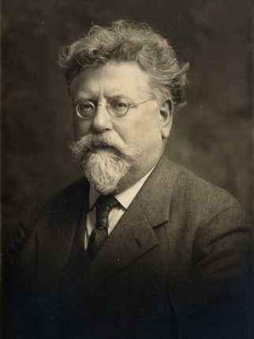

Dossier à relire par la bande.

1. Le syndicat comme outil d'émancipation
Pour l'anarcho-syndicalisme, les travailleurs doivent être capables de défendre eux-mêmes leurs intérêts.
Le syndicat est un lieu d'organisation collective qui permet de dépasser l'isolement des individus face aux employeurs.
Il constitue également un espace d'apprentissage de la solidarité, de la décision collective et de l'action autonome.
La lutte syndicale ne doit pas uniquement chercher à obtenir des améliorations immédiates. Elle doit contribuer à développer la capacité des travailleurs à organiser eux-mêmes la société.
Le syndicat peut ainsi être considéré à la fois comme un outil de résistance dans le présent et comme une structure potentielle de transformation révolutionnaire.
2. L'action directe
L'action directe désigne les formes d'action par lesquelles les personnes concernées interviennent elles-mêmes pour défendre leurs intérêts, sans déléguer leur lutte à des représentants extérieurs.
Elle peut prendre de nombreuses formes :
- La grève.
- Le boycott.
- Le piquet de grève.
- La solidarité entre travailleurs.
- L'occupation d'un lieu de travail.
- Le refus collectif d'exécuter une décision patronale.
- Les assemblées et mobilisations autonomes.
L'action directe ne signifie pas nécessairement une action individuelle ou spontanée. Elle peut être préparée, organisée et coordonnée collectivement.
Elle repose sur l'idée que l'émancipation ne peut être obtenue par la simple délégation du pouvoir à des professionnels de la politique ou de la représentation.
3. La grève générale
La grève générale occupe une place centrale dans la tradition syndicaliste révolutionnaire.
Elle consiste à interrompre simultanément l'activité dans plusieurs secteurs économiques et sociaux afin de créer un rapport de force capable de dépasser les revendications d'une entreprise ou d'une profession particulière.
Pour les révolutionnaires syndicalistes, la grève générale peut devenir un moyen de transformer profondément les rapports sociaux.
Dans certaines conceptions anarcho-syndicalistes, elle constitue un moment de rupture avec le pouvoir capitaliste et étatique.
La grève générale ne doit cependant pas être considérée comme une formule magique. Son succès dépend de conditions sociales, politiques et organisationnelles précises : solidarité entre secteurs, capacité de coordination, implantation syndicale et participation populaire.
4. Le fédéralisme syndical
L'anarcho-syndicalisme défend généralement une organisation fédéraliste.
Les syndicats de base doivent conserver leur autonomie tout en participant à des structures de coordination plus larges.
Ces structures permettent de coordonner les luttes, de partager les informations et d'organiser la solidarité entre professions et territoires.
Le fédéralisme repose notamment sur :
- L'autonomie des syndicats de base.
- La libre association.
- La coordination entre organisations.
- Les mandats définis par les assemblées.
- La responsabilité des délégués devant les personnes qui les mandatent.
- La révocabilité des mandats.
Il s'oppose à la concentration permanente du pouvoir dans une direction séparée de la base.
Le fédéralisme ne signifie toutefois pas l'absence de coordination ou de règles communes. Il cherche à organiser la coopération sans transformer les structures de coordination en autorités autonomes.
5. L'assemblée générale et la démocratie ouvrière
L'assemblée générale constitue un espace central de décision.
Elle permet aux travailleurs de discuter des revendications, de définir les actions collectives et de contrôler les mandats confiés aux délégués.
L'objectif est de limiter la séparation entre ceux qui décident et ceux qui exécutent.
Cette conception s'oppose aux formes de représentation dans lesquelles les décisions échappent progressivement aux personnes concernées.
Les pratiques réelles ont cependant varié selon les organisations, les périodes et les contextes. Les syndicats anarcho-syndicalistes n'ont pas toujours réussi à appliquer intégralement leurs principes démocratiques.
6. L'autonomie ouvrière
L'autonomie ouvrière signifie que les travailleurs doivent pouvoir définir leurs objectifs et leurs moyens de lutte sans dépendre des intérêts d'un parti, d'un gouvernement ou d'une institution extérieure.
Cette autonomie ne suppose pas un isolement du reste de la société.
Elle implique au contraire la capacité de construire des solidarités avec les autres mouvements d'émancipation.
Les syndicats doivent pouvoir collaborer avec des mouvements féministes, anticolonialistes, antifascistes, écologistes et populaires sans perdre leur capacité de décision indépendante.
7. Le rapport aux partis politiques
L'anarcho-syndicalisme refuse généralement que les syndicats deviennent les instruments d'un parti politique.
Cette position repose sur une critique de la délégation du pouvoir : les travailleurs ne doivent pas abandonner leur autonomie à une organisation prétendant représenter leurs intérêts.
Les conceptions varient toutefois sur la place des organisations politiques libertaires.
Certains courants considèrent que le syndicat doit réunir les travailleurs autour de leurs intérêts communs sans exiger une adhésion idéologique particulière.
D'autres estiment qu'une organisation syndicale révolutionnaire doit assumer explicitement un projet communiste libertaire et refuser les structures qui défendent un autre projet politique.
Ces débats ont traversé l'histoire de la CNT et de l'AIT.
8. La société future : l'organisation de la production
L'anarcho-syndicalisme ne se limite pas à la critique du capitalisme. Il réfléchit également à la manière dont la production pourrait être organisée après une révolution sociale.
Dans cette perspective, les travailleurs prennent collectivement en charge les entreprises et les infrastructures.
Les syndicats, les fédérations professionnelles et les collectivités territoriales peuvent participer à la coordination de la production et de la distribution.
Cette organisation doit permettre de répondre aux besoins sociaux plutôt que de produire pour le profit.
Les conceptions précises diffèrent selon les traditions anarcho-syndicalistes et leurs rapports au communisme libertaire.
Il faut notamment distinguer les conceptions qui accordent une place centrale aux organisations syndicales de celles qui privilégient davantage les communes, les assemblées territoriales et les fédérations de producteurs.
9. Les critiques et les débats internes
L'anarcho-syndicalisme a fait l'objet de critiques importantes, y compris au sein du mouvement anarchiste.
Le risque de bureaucratisation
Une organisation syndicale peut progressivement développer une direction permanente, des intérêts institutionnels et des habitudes bureaucratiques.
Les militants peuvent alors se retrouver séparés des travailleurs qu'ils sont censés représenter.
Le risque de réformisme
Les revendications immédiates sont indispensables pour améliorer les conditions de vie.
Mais une organisation peut finir par se limiter à la négociation de compromis avec les employeurs et abandonner progressivement ses objectifs de transformation sociale.
Le risque de syndicalisme exclusif
Certains anarchistes ont critiqué la tendance à considérer le syndicat comme l'unique forme d'organisation révolutionnaire.
La société ne se réduit pas au monde du travail salarié. Les rapports de domination traversent également les familles, les quartiers, les institutions, les rapports de genre et les structures coloniales.
Le risque de productivisme
L'émancipation ne peut pas être réduite à la prise de contrôle de l'appareil industriel.
Une société libertaire doit également interroger les finalités de la production, les besoins sociaux, les limites écologiques et les formes de division du travail.
La question des femmes
Les organisations ouvrières ont historiquement reproduit des inégalités de genre.
Des militantes anarchistes ont dénoncé la marginalisation des femmes dans les syndicats et les organisations révolutionnaires.
En Espagne, Mujeres Libres a notamment développé des pratiques d'éducation, d'organisation et d'émancipation des femmes pendant la révolution.
L'histoire anarcho-syndicaliste doit donc être étudiée aussi à travers les luttes contre le patriarcat.
Dans ce dossier
- Histoire et origines
- Expériences et héritages, avec la conclusion et la bibliographie complète du dossier.
- Textes à lire dans la bibliothèque : L'Action directe d'Émile Pouget et De l'action directe de Voltairine de Cleyre.
- Pour s'organiser aujourd'hui : Tenir une AG, Décider sans chef, Lancer une grève.
Sources et pour aller plus loin
Bibliographie du dossier
- Bibliographie et ressourcesTextes, travaux historiques et archives, en bas de la page Expériences et héritages.
Sur le site
- Le parcours AnarchosyndicalismePour apprendre à son rythme, module par module.
- Anarchistes et syndicatsLe débat d'Amsterdam en 1907, dans le dossier Anarchisme.
- Le syndicat ou la commune ?Le débat dans le dossier Communisme libertaire.
Dossier rédigé par la bande à Mamie à partir des textes originaux et des travaux d'historiennes et d'historiens cités en sources. Libre de reproduction.